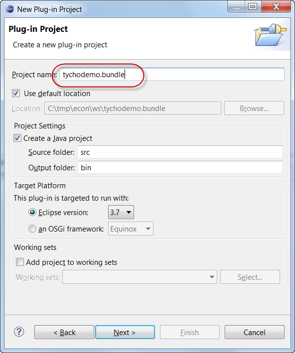
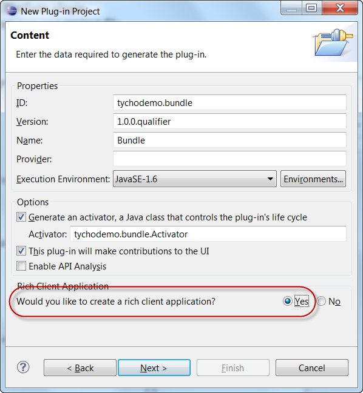
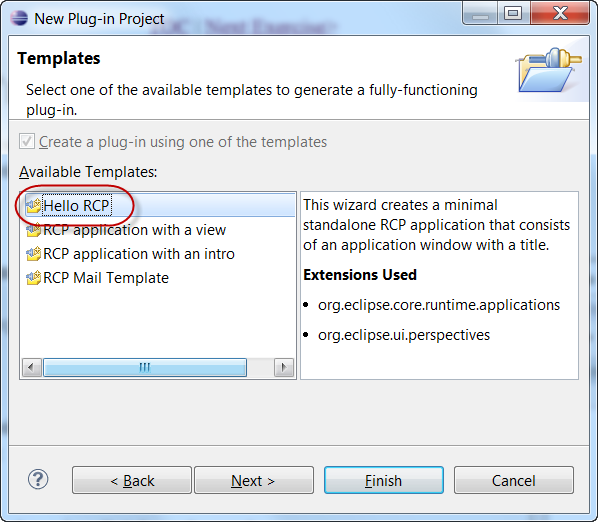
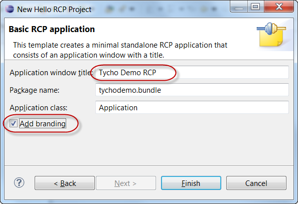
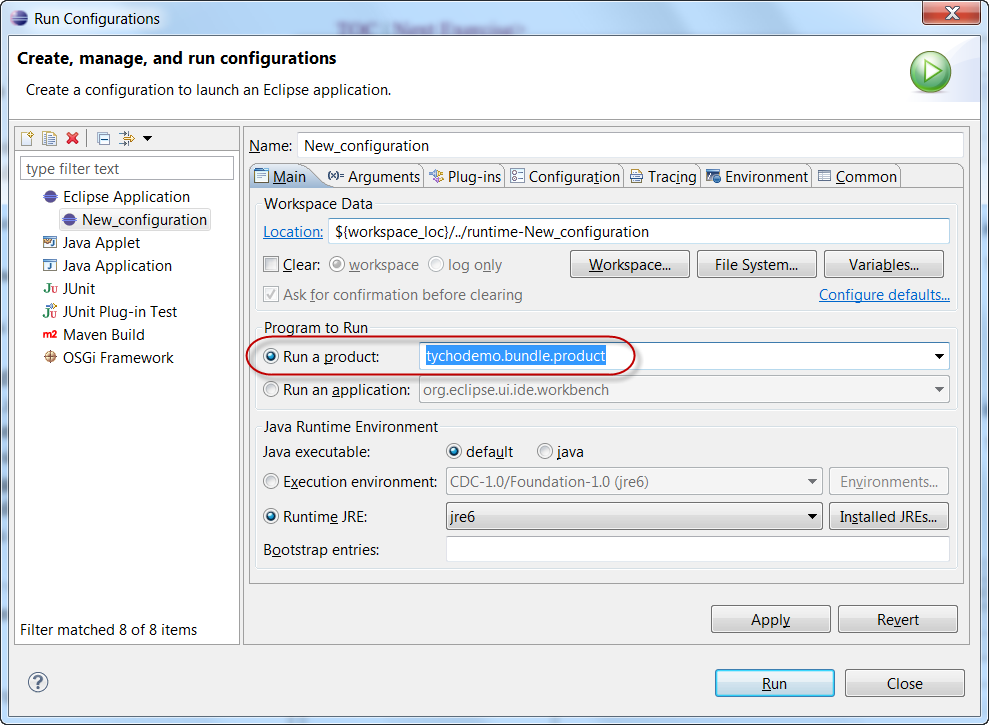
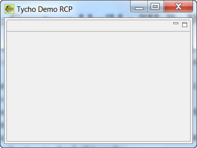
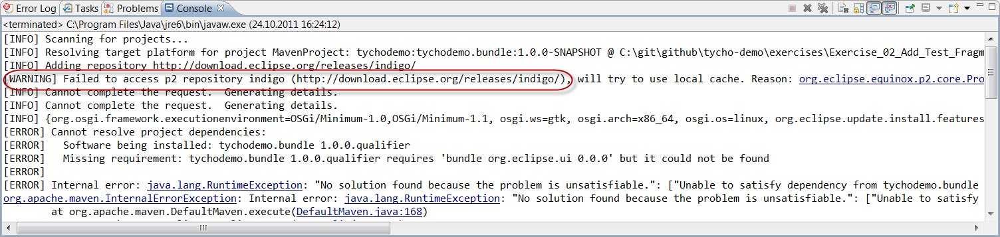
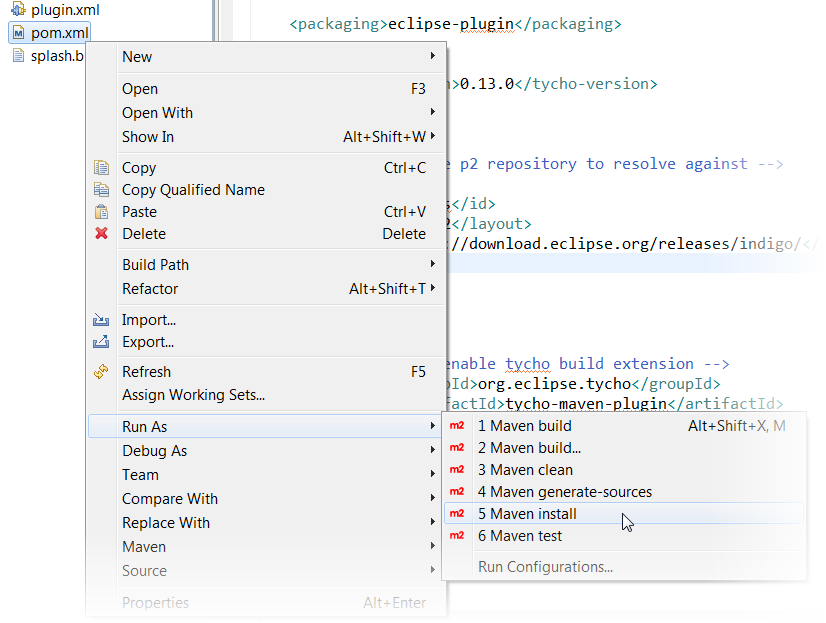

- File > New > Project > Plugin Project
- Choose "Create a rich client application" and use the "Hello RCP" template to create a hello-world RCP bundle
- Enter window title "Tycho Demo RCP"
- Check "Add branding" (Note: we will need this later when building a product)
|  |  |
|  |  |
- Create a new "Eclipse Application" launch configuration using Run > Run Configurations... > Eclipse Application > New
- Choose "Run a product" and select tychodemo.bundle.product
 - You should see a splash screen followed by an empty RCP window with title "Tycho Demo RCP".
 - Hint: to avoid starting lots of unneeded bundles slowing down startup:
- go to the Plug-ins tab of the launch configuration
- under "Launch with:", select "Plug-ins selected below only"
- uncheck all plugins in the target platform and only check "tychodemo.bundle" from the workspace
- press "Add Required Plug-ins"
<?xml version="1.0" encoding="UTF-8"?> <project xsi:schemaLocation="http://maven.apache.org/POM/4.0.0 http://maven.apache.org/xsd/maven-4.0.0.xsd" xmlns="http://maven.apache.org/POM/4.0.0" xmlns:xsi="http://www.w3.org/2001/XMLSchema-instance"> <modelVersion>4.0.0</modelVersion> <groupId>tychodemo</groupId> <artifactId>tychodemo.bundle</artifactId> <version>1.0.0-SNAPSHOT</version> <packaging>eclipse-plugin</packaging> </project>
<properties>
<tycho-version>0.13.0</tycho-version>
</properties>
<build>
<plugins>
<plugin>
<!-- enable tycho build extension -->
<groupId>org.eclipse.tycho</groupId>
<artifactId>tycho-maven-plugin</artifactId>
<version>${tycho-version}</version>
<extensions>true</extensions>
</plugin>
</plugins>
</build>
<repositories>
<!-- configure p2 repository to resolve against -->
<repository>
<id>indigo</id>
<layout>p2</layout>
<url>http://download.eclipse.org/releases/indigo/</url>
</repository>
</repositories>
NOTE: Should the Indigo p2 repository be too slow/unavailable, you may get an error like 
In this case, you can use a local p2 repository as a fallback.
Enter the file URL to the folder tutorial/repository/ which you copied from the USB stick during setup:
<repositories>
<!-- resolve against local p2 repository -->
<repository>
<id>indigo_local</id>
<layout>p2</layout>
<url>file:/absolute/path/to/repository-folder/copied/from/usb-stick/</url>
</repository>
</repositories>
